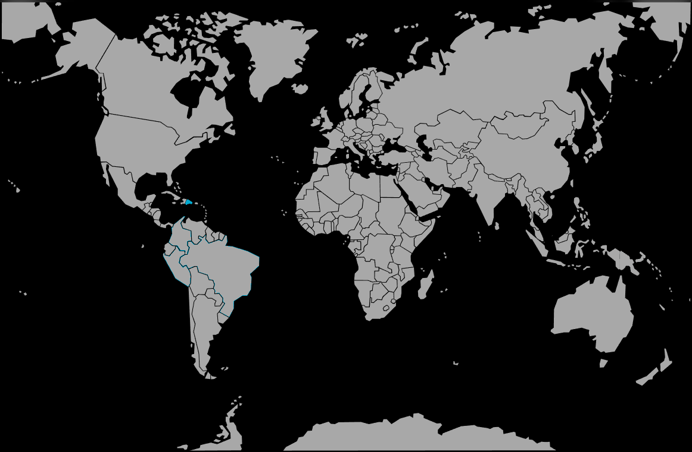

Systématique
- Ordre : Cyprinodontiformes
- Famille : Poeciliidae
- Sous-famille : Poeciliinae
- Genre : Limia
- Espèce : Limia perugiae

Limia perugiae est un petit vivipare caribéen, proche des Poecilia, présentant une robe tachetée ou marbrée selon les souches et les populations.
Les adultes atteignent généralement 4–6 cm, les femelles étant plus grosses que les mâles ; l’espèce est active, grégaire et réputée robuste en aquarium communautaire adapté.
L’espèce forme des groupes lâches qui occupent surtout la zone médiane et supérieure, explorant en permanence la colonne d’eau ; un harem avec plusieurs femelles par mâle limite le harcèlement et favorise un comportement plus calme.
Globalement paisible, elle cohabite bien avec d’autres poissons de taille similaire et de tempérament vif mais non agressif, dans un aquarium bien planté offrant des refuges pour les femelles et les jeunes.
Reproduction : vivipare ; les femelles mettent au monde de jeunes entièrement formés, souvent en petits groupes d’alevins, avec une fréquence de mises bas régulière.
Un décor dense en plantes fines et mousses augmente le taux de survie des alevins en leur offrant de nombreuses cachettes face à la prédation des adultes.
Dimorphisme sexuel : mâle plus coloré, plus petit, pourvu d’un gonopodium ; femelle plus grande et plus ronde, surtout lorsqu’elle est gravide.
Biotope : rivières, canaux et zones côtières chaudes, parfois légèrement saumâtres à hypersalées, avec végétation aquatique plus ou moins dense et eaux bien ensoleillées.
Répartition
Origine naturelle :
- Île d’Hispaniola (Haïti et République dominicaine), où l’espèce est largement répandue dans divers types de milieux.
- Ruisseaux, canaux, lagunes côtières et plans d’eau pouvant être saumâtres à hypersalés selon les populations.
Cette large tolérance aux milieux explique sa robustesse en aquarium, à condition de lui offrir une eau plutôt dure et basique avec une bonne stabilité.
Paramètres de maintenance
Température : 24 à 28 °C.
pH : 7,0 à 8,0, eau neutre à alcaline.
GH : 10 à 25 °dGH, eau dure à très dure.
Courant : faible à modéré, avec une bonne filtration et une oxygénation correcte.
Volume conseillé : ≥ 80 L pour un petit groupe, avec couvercle (poisson sautant) et décor bien planté.
Régime alimentaire
Régime : omnivore à tendance algivore ; consomme algues, débris végétaux, micro-invertébrés et autres petits organismes.
En aquarium, il accepte facilement granulés et flocons de qualité, complétés par spiruline, légumes pochés et petite nourriture vivante ou congelée (artémias, daphnies, micro-vers) pour assurer une bonne santé et de belles couleurs.